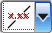
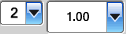

选择首选项→注释。
在注释首选项对话框中，点击尺寸选项卡。
在尺寸方位列表中，选择水平 。
现在水平选项为默认的放置选项，但您可以在创建某些 PMI 数据类型时修改方位。
在放置列表中，选择手工放置 —箭头在内 。
在精度和公差组的标称值列表中，选择标称值 — x.xx(值 = 2)，在公差列表中，选择无公差(值 = 100)。

点击确定。
选择首选项→产品制造信息→公差标准。
在标准列表中，选择 ASME Y14.5 – 2009。